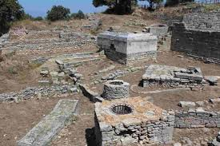
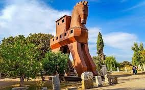

Truva, dünyadaki en ünlü antik kentlerden birisidir. Truva’da görülen 9 katman, kesintisiz olarak 3000 yıldan fazla bir zamanı göstermekte. Truva, bulunduğu coğrafi konum nedeniyle burada hüküm süren uygarlıkların diğer bölgelerle ticari ve kültürel bağlantıları açısından daima çok önemli bir rol üstlenmiştir


 "Çanakkale"ye dönmek için basın
"Çanakkale"ye dönmek için basın